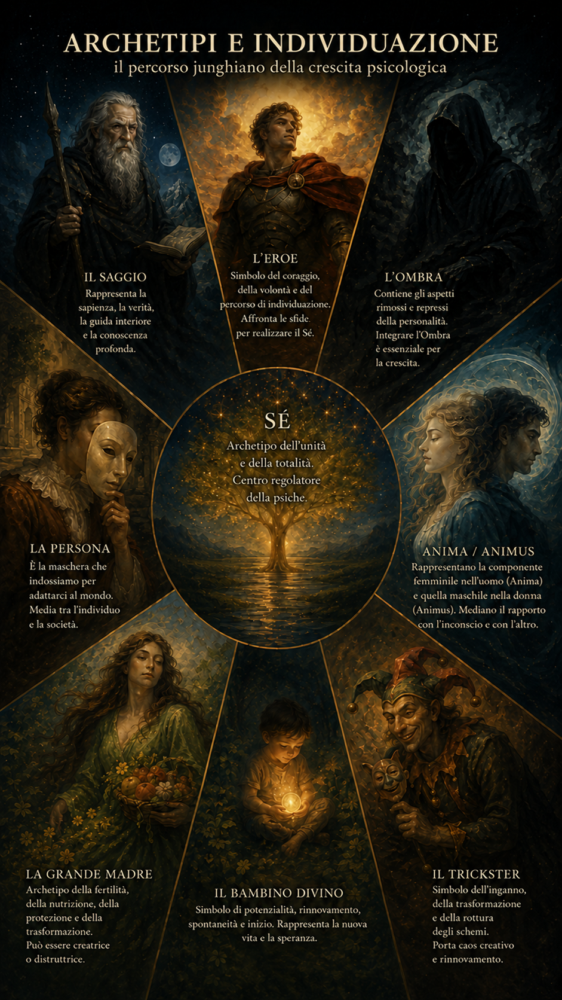

PSICOLOGIA, UN PERSONAGGIO ALLA VOLTA
Atlante di
Limite & Relazione
La mente prende forma. Bias, persuasione, emozioni, coscienza, memoria, personalità e relazioni: un atlante visivo per esplorare l’esperienza e il modo in cui giudichiamo, comunichiamo e rispondiamo alla pressione.
Esplora la serieIL SISTEMA SOTTO PRESSIONE ·
L.I.M.I.T. Model.
Una cornice teorica e formativa di Tommaso Corona, sviluppata per Limite & Relazione. Carico, identità, mentalizzazione, inibizione e tensione sono compresenti: cambiano nel tempo e si influenzano reciprocamente.
Un carico crescente può aumentare la tensione e rendere più difficile considerare il punto di vista dell’altro; una pausa può riaprire lo spazio per comprendere e scegliere. Le lettere aiutano a osservare queste interazioni, senza imporre una sequenza di fasi.
Proposta teorica e formativa personale, non ancora validata empiricamente. La consultazione offre spunti di osservazione e debriefing.
Esplora i 6 posterCOME SI ORIENTA IL GIUDIZIO ·
Bias cognitivi.
Scorciatoie mentali, errori di giudizio e fenomeni che orientano interpretazioni e decisioni. Esplora le metafore animali della serie e consulta le schede con gli autori di riferimento.
Esplora i 56 posterCOME SI ORIENTA UN SÌ ·
Persuasione.
I sette principi di Robert Cialdini, il contrasto nella persuasione e la mera esposizione studiata da Robert Zajonc: nove poster per riconoscere che cosa orienta una scelta e mantenere spazio per valutarla. Ogni scheda conserva la scena e lo slogan della serie e offre i riferimenti per approfondire.
Approfondito in Psiche & Thanatos ↗.
Esplora 9 posterCOME VIVIAMO E COMPRENDIAMO ·
Mente, esperienza e relazione.
Percepire, prestare attenzione, ricordare, riconoscere le emozioni e incontrare il punto di vista dell’altro. Venti poster per esplorare come prende forma l’esperienza, come la interpretiamo e quale cambiamento può produrre.
Esplora i 20 posterUN PERCORSO NELLA SERIE ·
Gestione dello Stress.
Riconoscere la pressione, ritrovare risorse, scegliere come rispondere. Otto poster per esplorare il coping e la presenza consapevole attraverso gli animali della serie.
Esplora gli 8 posterIL MODELLO OCEAN ·
Tratti di personalità.
Una tavola d’insieme e cinque dimensioni: apertura all’esperienza, coscienziosità, estroversione, gradevolezza e nevroticismo. Ogni persona le esprime in gradi diversi e in una combinazione propria. Le schede collegano gli studi sui Big Five alle metafore animali della serie.
Approfondito in Psiche & Thanatos ↗.
Esplora 6 posterCOMUNICAZIONE, PARADOSSI ED EQUILIBRIO ·
Psicologia Strategica.
Un cucciolo vestito da fantasma attraversa sette incontri di Halloween: il doppio legame, i cinque assiomi della comunicazione e la retroazione negativa. Un percorso per osservare messaggi, relazioni e risposte reciproche, con riferimenti a Bateson, Watzlawick, Beavin, Jackson e Wiener.
Esplora i 7 poster
ARTICOLI E RIFLESSIONI · TOMMASO CORONA
La zebra, il leone e l’erba
Percezione, realtà costruita e conflitto per il significato in una società polarizzata
Una scena naturale diventa il punto di partenza per esplorare come selezioniamo ciò che vediamo, attribuiamo significati agli eventi e difendiamo le nostre rappresentazioni quando diventano parte dell’identità personale e collettiva.
Leggi l’articolo integrale
ARTICOLI E RIFLESSIONI · TOMMASO CORONA
L’ombra e la voce
Appartenenza, identità e responsabilità della parola
Che cosa accade quando il desiderio di essere parte di un gruppo ci induce a tacere ciò che pensiamo? Una riflessione sul valore della voce personale, dalla sicurezza psicologica all’ombra nel pensiero di Jung.
Leggi l’articolo integrale
ARTICOLI E RIFLESSIONI · TOMMASO CORONA
Archetipi e individuazione
Il percorso junghiano della crescita psicologica
Un’introduzione al significato degli archetipi, dalle immagini della Persona e dell’Ombra fino al Sé, e al processo attraverso cui impariamo a riconoscere e integrare le diverse dimensioni della nostra vita interiore.
Leggi l’articolo integrale
ARTICOLI E RIFLESSIONI · TOMMASO CORONA
La soglia della radicalizzazione
Costruzione del nemico: quando la polarizzazione diventa struttura
Come un conflitto tra opinioni può irrigidirsi in uno scontro tra identità? Una riflessione sul nemico come elemento di coesione, sul disimpegno morale e sulla soglia che separa il confronto dalla radicalizzazione.
Leggi l’articolo integrale
ARTICOLI E RIFLESSIONI · TOMMASO CORONA
Lo “slogun” batte l’argomento
Scrolliamo emozioni, non argomentazioni.
Uno “slogun” non è soltanto uno slogan: è un messaggio costruito per distorcere la notizia e orientare lo schieramento. Una riflessione su manipolazione, scorciatoie mentali e appartenenza nei social.
Leggi l’articolo integrale
ARTICOLI E RIFLESSIONI · TOMMASO CORONA
Dal “What If” al “What Is”
Perché avere un’idea non basta: bisogna farla vivere
Dalla possibilità alla realizzazione: il ruolo di una visione condivisa, di obiettivi concreti e della motivazione autonoma nel trasformare le idee in azioni collettive. Con esempi dal lavoro organizzativo e aeronautico.
Leggi l’articolo integraleIL BESTIARIO DELLA MENTE
Esplora l’atlante.
Qui non ci sono ancora poster.
Prova un’altra parola o amplia i filtri.
UNO SGUARDO, NON UN’ETICHETTA
Esplorare la mente e la relazione invita a comprendere l’esperienza e a rivedere il proprio giudizio.
Gli animali sono metafore visive: non descrivono persone né costituiscono categorie diagnostiche.